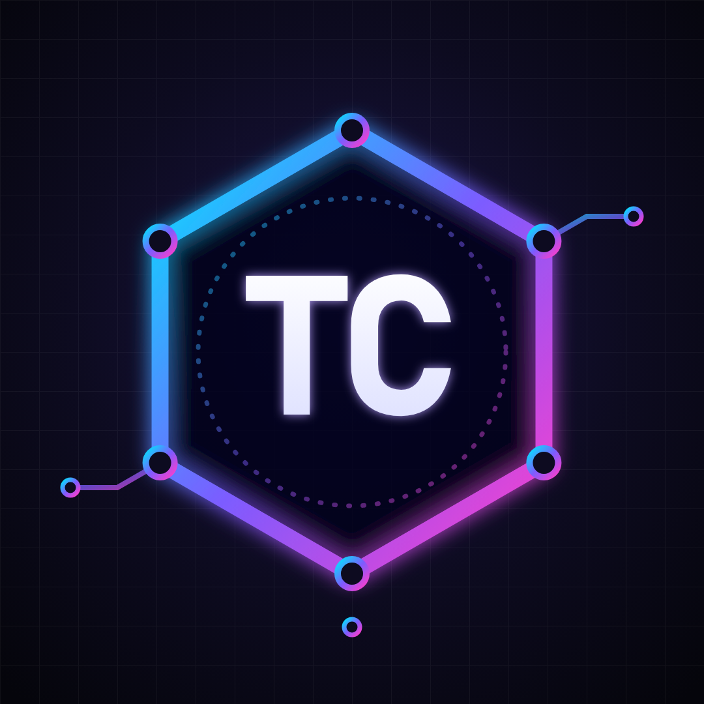

THECHEMIST EMPIRE
Guide pratiche sull'IA, spiegate con chiarezza · GTA 6 in diretta con commento live
Le guide
I repository e gli strumenti dei video, dal più recente.
Ollama · l'IA gratis sul tuo PC (github.com/ollama/ollama)
Ollama · la guida breve in tre comandi (italiano e inglese)
Ogni video ha la sua guida breve qui. Il corso completo, con esercizi guidati e schermate passo passo, è in preparazione.
Dove trovarci
Contenuti in italiano, inglese e spagnolo.
THECHEMIST Social, lo strumento
THECHEMIST Social è lo strumento personale con cui il proprietario di THECHEMIST EMPIRE gestisce i propri canali. Gira solo sul suo computer e, con il suo consenso, usa le API ufficiali di YouTube, Meta (Instagram e Facebook), Twitch, Kick e TikTok per:
- pubblicare i propri video sui propri account (su TikTok come bozza, da completare nell'app);
- aggiornare titolo e dettagli delle proprie dirette e scrivere messaggi nella chat delle proprie dirette;
- leggere le statistiche dei propri account.
Non è un servizio pubblico: lo usa soltanto il proprietario degli account.